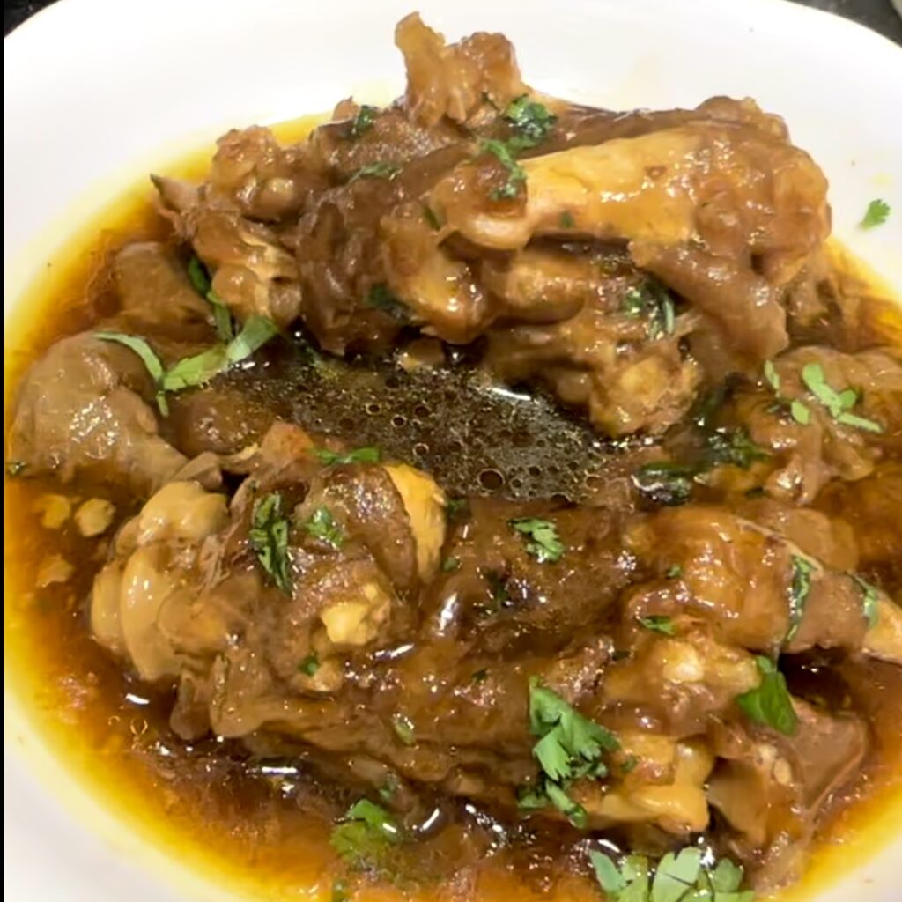

Paaya Recipe

Home
What is Paya or Paye?
Paye, which literally translates to trotters/feet is a popular dish in many South Asian countries
particularly Pakistan and Bangladesh. It's essentially a soup/stew made by simmering goat or lamb
trotters with aromatic spices like ginger, garlic, and turmeric until they become tender.
This slow cooking process allows the flavors to meld and the collagen from the trotters to infuse
the broth, resulting in a rich and flavorful broth.
Ingredients
- 4 bay leaves
- 10 cloves
- 2 tablespoons whole black pepper
- 2 tablespoons whole coriander seed
- 1 two-inch cinnamon stick
- ¼ of an onion
- 8 garlic cloves
- 1 thumb-sized piece of fresh ginger
- 1 teaspoon salt
- 8–10 cups of water
- 5–6 lbs paye with skin, hair removed
Second Set of Ingredents
- ½–¾ cup oil
- 3 red onions, pureed (without water)
- 1 tablespoon ginger garlic paste
- 2 tablespoons coriander powder
- 1 tablespoon red chili powder
- 1 teaspoon Kashmiri red chili (for color)
- 1 teaspoon turmeric
- 1 tablespoon salt (or to taste)
- ½ teaspoon garam masala
How to make it ? i.e., the steps
- In your Instant Pot or large cooking pot, add all the ingredients for the stock/yakhni.
- Pressure cook in your Instant Pot for 25–30 minutes until the trotters are tender.
- While the stock is being prepared, sauté the puréed onions until golden, then add spices and ginger garlic paste.
- Next, strain the stock from the Instant Pot and discard whole spices.
- Drop the trotters into the onion masala and stir well for 5–10 minutes on medium to low heat.
- Add a cup or two of the strained stock to loosen up the masala before pouring all of the stock into the pan.
- Let the Paya come to a boil, then cover and slow cook on low heat for an hour. (The longer you cook, the richer it becomes.)
- When serving, ladle the broth with one or two trotters and garnish with fresh cilantro. Serve with hot naan.